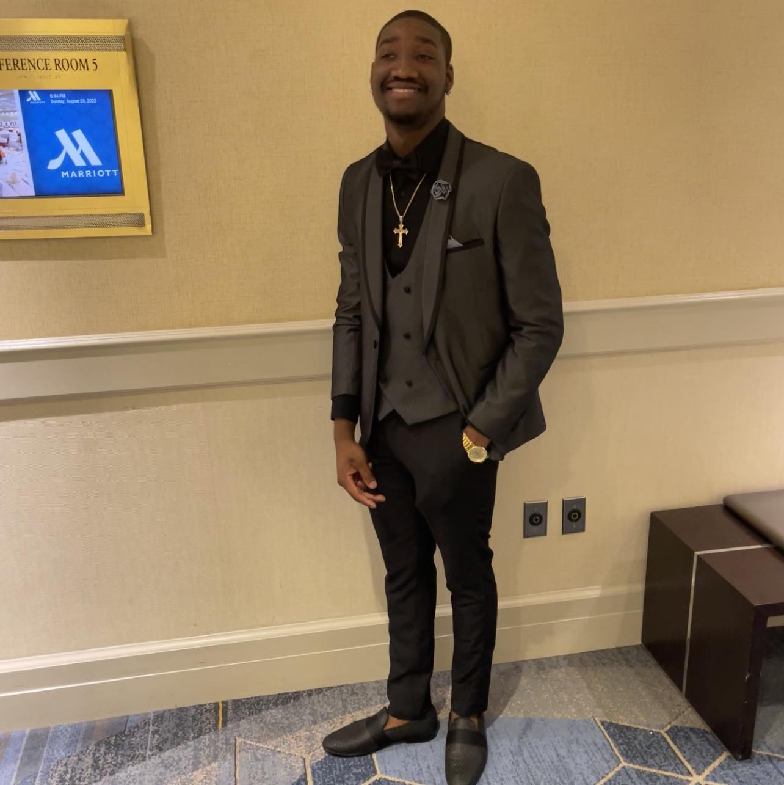

Wistone Nerilus

Summary
tech-savvy professional with versatile expertise in delivering IT support
and technical assistance. Adequate in configuring, installing, troubleshooting, updating,
and repairing technical systems, software, and hardware. Compassionate and detail oriented
and driven to complete tasks timely and well. I am also fluent in French
Education
- North High School, Worcester, MA | High School Diploma
- Quinsigamond Community College, Worcester, MA Associate in Computer
- University of Colorado, Colorado Springs, CO Certificate in Cybersecurity for Busines
- Certificate in Introduction to Technical Support
- Certificate in Introduction to Hardware and Operating Systems
- Certificate in Introduction to Software, Programming, and Databases
- Certificate in Cyber Threats And Attack Vectors
- Certificate in Introduction to Networking and Storag
Work Experience
- Inventory leader - CarMax
September 2019 - March 2022
- In charge of inventory and doing reports on cars received to the store.
- Inspections to ensure the cars are not damaged, if so, I’d put an order in for it to be taking care of.
- Developing Windows 10 for computer systems.
- I oversee all inventory cars that are received by company, the cleaning etc.
- Answered customer inquiries via phone and email.
- Resolved customer complaints and issues.
- Dietary Manager - Kindred Healthcare
September 2017 - June 2019
- Managed the dietary needs of the patients at the facility.
Overseed the kitchen and made4 sure it operated properly.
- Help Desk Support - Boyle Associate INC
May 2018 - september 2019
- Imaging and refreshing computer desktop and laptop.
- Installing hardware peripherals printers, monitors, desktop/ laptop.
- Installing dock station, trouble shooting and updating computers.
- Answered customer inquiries via phone and email.
- Resolved customer complaints and issues.
- Topcoat Associate - HAARTZ
March 2022 - Present
- Prepare leather materials that goes out to customers.
- I do tape testing to ensure the leather is good.
Skills
- Team Leader: ⭐ ⭐ ⭐ ⭐ ⭐
- Manager: ⭐ ⭐ ⭐ ⭐ ⭐
- Customer Service: ⭐ ⭐ ⭐
- Organizational skills: ⭐ ⭐ ⭐
- Microsoft Office Suite: ⭐ ⭐ ⭐
Other
© Wistone Nerilus. All rights reserved.